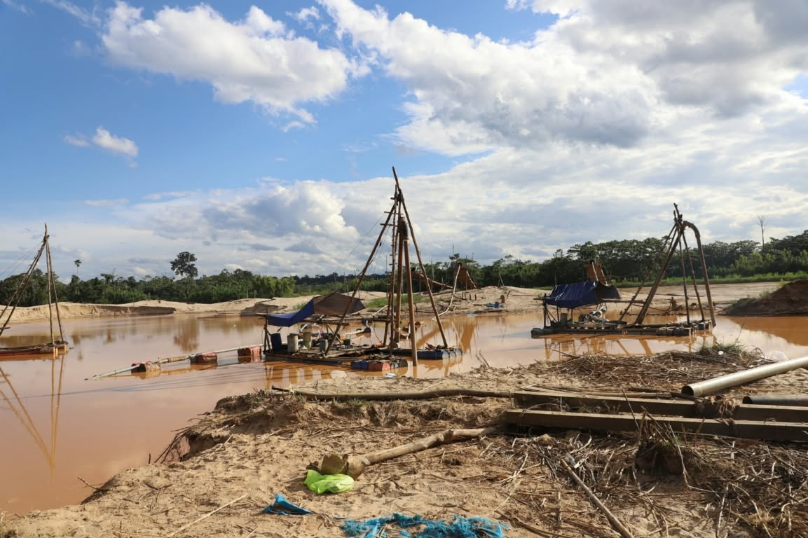

Cuidar la vida que nos rodea
La vida de
nuestro bosque
nos necesita.
Somos jóvenes de Madre de Dios unidos para alzar la voz por nuestra biodiversidad y proteger el hogar que compartimos.
Madre de Dios · Amazonía peruana15 Vida de ecosistemas terrestres
Nuestra razón de ser
Dedicado a quienes decidieron cuidar nuestra casa común.
La creación de esta plataforma es el resultado de una visión compartida: una iniciativa impulsada por jóvenes con el firme propósito de construir una sociedad más sana para todos los madrediosenses y contribuir activamente a la preservación de nuestra casa común.
Este esfuerzo está dedicado a todos los jóvenes de la región de Madre de Dios que no se rindieron ante las adversidades de su entorno y que decidieron no quedarse de brazos cruzados frente a la ignorancia y la indiferencia ante la pérdida de biodiversidad.
Nuestro propósito
Concientizar hoy para proteger la vida de mañana.
Queremos sensibilizar a las personas sobre la pérdida de biodiversidad en Madre de Dios y promover el cuidado y la conservación de nuestros ecosistemas. Creemos que una sociedad más informada puede sumarse a la protección de nuestra casa común.
El desafío en nuestra región
La biodiversidad de Madre de Dios está en riesgo.
En Madre de Dios, la pérdida de biodiversidad es un problema que afecta a los ecosistemas, la flora y la fauna de nuestra región. Sus principales causas son la deforestación, la contaminación, la minería ilegal y la explotación excesiva de los recursos naturales.
Lo que está en juego
Cuando se pierde un hábitat, todo se desequilibra.
Estas actividades destruyen hábitats de nuestra localidad, reducen las poblaciones de especies y desequilibran los ecosistemas. Entre sus consecuencias están la aparición de enfermedades, la migración forzada de animales y la contaminación de los ríos.
Ecosistemas en desequilibrio y animales desplazados
Ríos contaminados y riesgos para la salud
Imágenes de nuestra región
Un territorio de vida que merece ser protegido.
La Amazonía nos da vida. Estas imágenes muestran sus bosques y algunos de los impactos que amenazan sus ecosistemas.





Conócenos
Jóvenes unidos por nuestra tierra.
Somos el equipo detrás de esta iniciativa de concientización sobre la biodiversidad en Madre de Dios.
- Victoria Anabell Mamani Quispe
- Jhosep Anthony Condori Condori
- Noelia Abigail Sánchez Yucra
- Dyhara Mayte Orccohuaranca Ramos
Institución educativaI.E. Básica Regular Nuestra Señora de las Mercedes